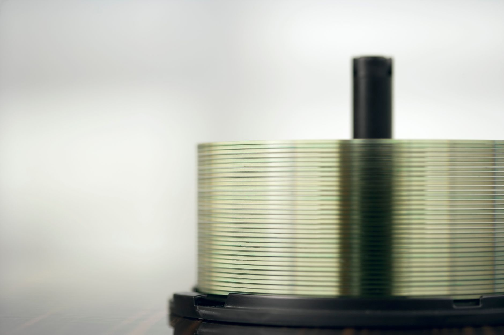

칩노믹스가 짚은 TSMC 60년, 한국에 남은 3가지 과제

'칩노믹스'는 TSMC가 1960년대 대만 수출가공구 설치, 1980년대 UMC 분사, 1987년 TSMC 설립까지 이어진 30년 국가 전략의 결과물임을 주장한다. 한국이 삼성·SK하이닉스 중심 수직 통합 모델로 빠른 추격에 성공한 반면, 대만은 설계·제조·패키징·소재·장비를 분산 배치한 생태계 모델을 선택했다.
신주 사이언스파크 내 기업 간 인력 이동률은 연 15~20%로 유지되며, 이를 통해 암묵지(tacit knowledge)가 산업 전체로 확산된다. TSMC는 300개 이상 팹리스 고객을 보유하며 단일 고객 비중을 25% 미만으로 관리한다. 2024년 기준 애플이 TSMC 매출의 약 25%를 차지하며 이 상한선에 근접해 있다.
TSMC의 핵심 경쟁력은 경쟁사 간 설계 정보를 절대 공유하지 않는 '고객 비밀 보장' 구조다. 삼성 파운드리가 메모리·시스템반도체를 동시에 설계·제조하는 구조에서 팹리스 고객 신뢰를 얻기 어렵다는 구조적 딜레마가 다시 부각된다. 실제로 퀄컴·AMD 등 주요 팹리스는 TSMC 의존도를 높이면서 삼성 파운드리 발주를 2023~2024년 연속 축소했다.
칩노믹스의 분석은 한국 반도체 정책에 불편한 거울을 들이댄다. 소부장 1,700억 투자가 20년 생태계 설계로 이어지려면 클러스터 밀도(인력 이동·기술 확산 메커니즘)가 필수다. 현재처럼 지역 분산 지원에 그치면 대만 모델과의 격차는 좁혀지지 않는다.
삼성 파운드리의 구조적 딜레마는 단기간 해소되기 어렵다. 파운드리를 DS부문에서 완전 분리하지 않는 한, 엔비디아·AMD 등 상위 팹리스 고객의 민감 설계 정보를 안전하게 격리할 수 없다는 인식이 고객사에 고착되고 있다.
대만 모델의 교훈을 선제적으로 적용하는 한국 순수 파운드리 기업이 수혜를 받는다. DB하이텍은 8인치 특수 공정(전력반도체·MEMS·이미지센서)에 집중하며 고객 신뢰 기반을 쌓고 있다. 틈새 파운드리 모델로 TSMC 방식을 부분 복제한 첫 국내 사례다.
TSMC 공급망에 이미 진입한 국내 소재 기업들이 한-대만 협력 확대 국면의 직접 수혜를 받는다. 동진쎄미켐(포토레지스트), 솔브레인(고순도 불화수소)은 TSMC 애리조나·쿠마모토 팹 증설 사이클에서 공급 물량 확대가 기대된다.
메모리 편중 구조를 유지하는 기업들은 AI 가속기 시대 파운드리 생태계 주도권을 TSMC에 내줄 위험이 크다. 삼성전자 파운드리 부문의 2024년 글로벌 시장 점유율은 약 13%로 TSMC 61%와의 격차가 좁혀지지 않고 있다.
TSMC 공급망 진입에 실패한 한국 소부장 중소기업들은 글로벌 선도 파운드리 스펙에서 배제될 위험이 있다. TSMC 공급업체 인증은 평균 18~24개월 검증 기간이 필요하며, 지금 시작하지 않으면 2027년 TSMC 2나노 양산 사이클에 참여 기회 자체가 없다.
전략가들은 소부장 1,700억 투자의 집행 방식을 면밀히 추적해야 한다. 충청·수도권 클러스터 집중 배분인지, 분산 지원에 그치는지가 10년 후 생태계 경쟁력을 가른다. 대만 신주 사이언스파크 수준의 기업 간 인력 이동률(연 15~20%)을 유도하는 정책 설계가 수반돼야 실효성이 있다.
TSMC 공급망 진입을 노리는 국내 소부장 기업은 2025~2026년 TSMC 애리조나·쿠마모토 팹 증설 사이클을 목표 시점으로 잡고 지금 즉시 인증 절차를 시작해야 한다. 18~24개월 검증 기간을 역산하면 이미 신청 시점이 지나가고 있다.
실제 조달 현장에서는 — TSMC와 삼성 파운드리를 동시에 공급하는 소재 기업들이 예외 없이 'TSMC 스펙'을 내부 품질 기준 상한으로 설정한다. TSMC 인증이 사실상 글로벌 소부장 표준 티켓이 됐기 때문이다. 여기에 올라타지 못한 기업은 삼성 단독 의존 리스크를 고스란히 안으면서, TSMC 향 고마진 물량 기회도 영구히 잃게 된다.
이 포스팅은 쿠팡 파트너스 활동의 일환으로 수수료를 제공받습니다.